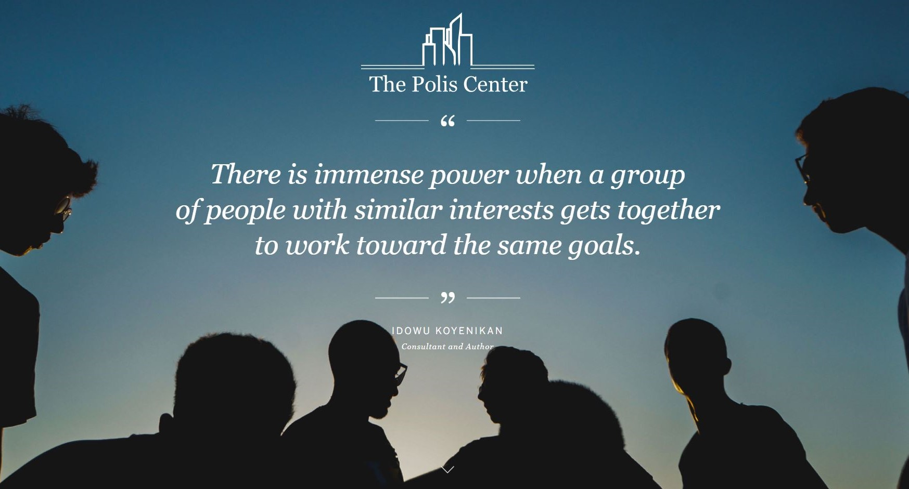
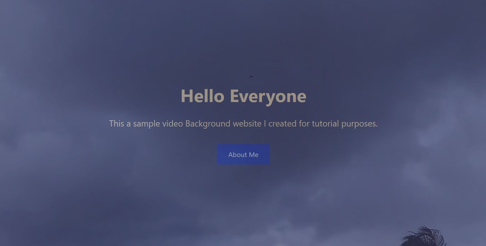
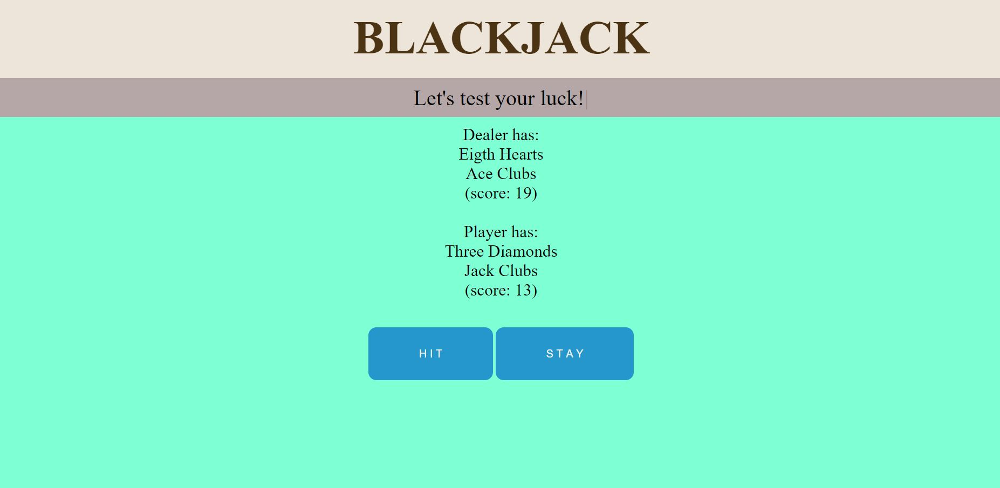
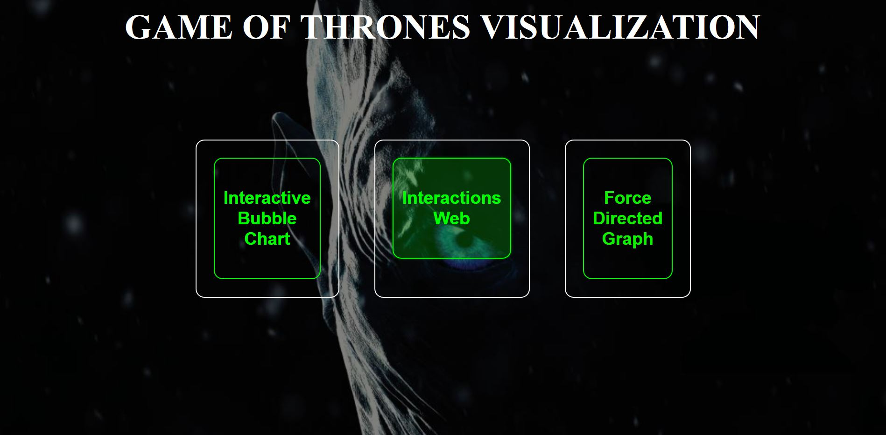

Looking for a WEB DEVELOPER?
I'm a Web Developer & Programmer living in Indianapolis, IN
Strive to build immersive and beautiful web applications through carefully crafted code and user-centric design. Currently working part-time as a Web Developer for Indiana University.
As a former Software Engineer at Wipro, I have a diverse set of skills, ranging from design, to HTML / CSS / JavaScript / Angular / Bootstrap / jQuery / Java / REST / SOAP / MYSQL, all the way to WordPress, Drupal development and version control.
When not online, you can find me biking or running in the Monon Trail, trying out a new recipe in the kitchen, editing stupid pictures like every millennial on the social network.
Recent Work

• Worked with several pages to make them print-friendly using HTML / CSS.
• Removed white spaces between pictures, project boxes using custom CSS.
• For better UI experience desktop and mobile views are taken into consideration.
• Worked on different button and box designs to make them look appealing.

• Implemented a full screen video background website using HTML5 / CSS.
• Created two separate sections to put different Information or insert more components.
• This website is currently undergoing, can be used as personal or professional use.

• Developed the front-end using CSS / HTML5 / JavaScript framework to build this single player game.
• Typed.js library is used for better UI Design.
• Used Different functional logic to make this game much more interactive and fun to play to achieve a satisfying user experience.
• Covered and reviewed all the test cases carefully to achieve an accurate result. The overall result is satisfying.

• Implemented Force-Directed Graph, Interactive Web, Interactive Bubble Chart using D3 libraries.
• Used HTML5 and CSS to build the main page and include all three-visualization techniques.
• Analyzed the family tree and dynasty of the characters in the series. Also, measured the weighted average.

• Created menus and submenus for this Drupal website using HTML5 / CSS.
• Designed and implemented side navigation menus and made it user friendly.
• Implemented and customized the footer in this Drupal 7 website.
• Successfully migrated the website from Drupal 6 to Drupal 7 after backing up carefully.

• Developed the front-end using CSS / HTML5 / XHTML / Bootstrap / JavaScript framework to build this single player game.
• Used Different functional logic to make this game much more interactive and fun to play to achieve a satisfying user experience.
• Covered and reviewed all the test cases carefully to achieve an accurate result.
Get In Touch
Let's build something together! Or send me an email if you have any other questions.
-
Address
842 N Capitol Ave.
Indianapolis, IN 46204
United States
-
Phone
+1 513-526-3929
-
Email
deyd@purdue.edu


{kind=link}
{kind=link}
{kind=link}
{kind=link}